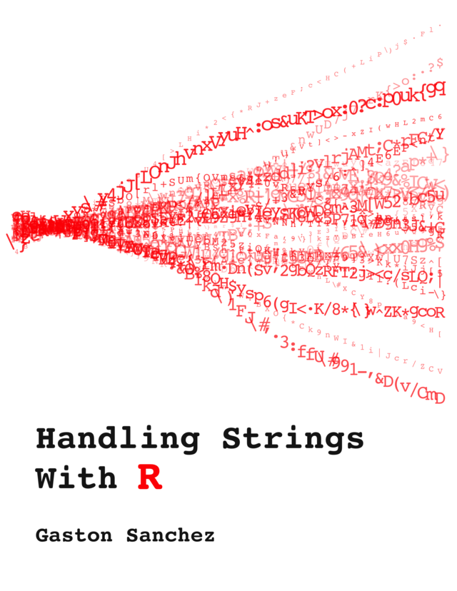

STAT 7500
stringr package (in tidyverse)
Almost every function starts with str_ and takes the string(s) as its first argument.

String matching is case-sensitive.
Convert to one case first, then match:
Tip: whenever you search names or titles, ask whether the pattern could appear at the start (capitalized) as well as in the middle.
[1] "V"[1] "nova"[1] "nova"[1] "nova"[1] "a"Negative numbers count from the end, so str_sub() works no matter how long each string is.
[1] FALSE FALSE TRUE FALSE[1] FALSE TRUE TRUE FALSEstr_starts() and str_ends() return TRUE/FALSE, just like str_detect(), so they work inside filter() and mutate().
Square brackets mean “any one of these characters”:
Exercise 1 in week_12.qmd
Run each line and add a comment describing what it does.
[1] "ne apple" "tw pears" "thre bananas"[1] "n ppl" "tw prs" "thr bnns"fixed()Some characters (? . * + ( ) [ ] $ ^) have special meanings in a pattern.
Wrap the pattern in fixed() to match it literally:
Ordinary characters like : or - need no special treatment.
sep vs. collapse[1] "MAT-1" "MAT-2" "MAT-3"[1] "a, b, c"Rows: 1,924,665
Columns: 5
$ year <dbl> 1880, 1880, 1880, 1880, 1880, 1880, 1880, 1880, 18…
$ sex <chr> "F", "F", "F", "F", "F", "F", "F", "F", "F", "F", …
$ name <chr> "Mary", "Anna", "Emma", "Elizabeth", "Minnie", "Ma…
$ n <int> 7065, 2604, 2003, 1939, 1746, 1578, 1472, 1414, 13…
$ prop <dbl> 0.07238359, 0.02667896, 0.02052149, 0.01986579, 0.…Each row is a name × sex × year combination, not one baby.
n: number of babies given that name that yearprop: n divided by the total babies of that sex that yearString functions are vectorized, so they work inside mutate():
# A tibble: 1,924,665 × 5
year sex name first_two has_z
<dbl> <chr> <chr> <chr> <lgl>
1 1880 F Mary Ma FALSE
2 1880 F Anna An FALSE
3 1880 F Emma Em FALSE
4 1880 F Elizabeth El TRUE
5 1880 F Minnie Mi FALSE
6 1880 F Margaret Ma FALSE
# ℹ 1,924,659 more rows# A tibble: 309 × 1
name
<chr>
1 Anna
2 Annie
3 Anne
4 Annette
5 Annetta
6 Annabel
# ℹ 303 more rowsfilter() keeps rows where the condition is TRUE, so any str_detect(), str_starts(), or str_ends() call can go inside it.
# A tibble: 58,788 × 5
title year rating title_length has_colon
<chr> <int> <dbl> <int> <lgl>
1 $ 1971 6.4 1 FALSE
2 $1000 a Touchdown 1939 6 17 FALSE
3 $21 a Day Once a Month 1941 8.2 22 FALSE
4 $40,000 1996 8.2 7 FALSE
5 $50,000 Climax Show, The 1975 3.4 24 FALSE
6 $pent 2000 4.3 5 FALSE
# ℹ 58,782 more rowsThe patterns we used are a small piece of regular expressions (regex).
When you need a complex pattern, describe in words what you want to match and ask AI for the regex.
Just make sure to double check that it works as expected!
Exercises 2–6 in week_08.qmd
Before you code each question, decide:
sum(n))?# A tibble: 3 × 2
dept number
<chr> <chr>
1 STAT 7500
2 MAT 1505
3 CSC 1051 separate_wider_delim() splits one column into several at a delimiter.
You may see separate() online; it still works but has been superseded by the separate_wider_*() functions.
Splitting on " " gives a different number of pieces per row. Use too_many = "merge" to keep the rest together:
parse_number() drops non-numeric characters before and after the number.
unite(): the reverse# A tibble: 2 × 1
course
<chr>
1 STAT-7500
2 MAT-1505 unite() pastes columns together inside a data frame.
bind_rows() stacks data frames with the same columns. .id records which one each row came from.
The roster is in one Excel file with four sheets: Pitchers, Catchers, Outfielders, Infielders.
Each sheet has Name, B/T, Ht, Wt, and DOB columns.
List every cleaning step you would need to get these data into one tidy, analysis-ready data frame. Don’t worry about exact code yet.
Last week: match the parser to the input format.
# A tibble: 3 × 2
start_time end_time
<dttm> <dttm>
1 2025-03-07 08:15:00 2025-03-07 08:32:30
2 2025-03-08 17:42:00 2025-03-08 18:10:00
3 2025-03-09 23:55:00 2025-03-10 00:20:00Use the time zone the data source records in (check its documentation). Here we assume local Philadelphia time.
# A tibble: 3 × 5
start_time date month weekday hour
<dttm> <date> <ord> <ord> <int>
1 2025-03-07 08:15:00 2025-03-07 Mar Fri 8
2 2025-03-08 17:42:00 2025-03-08 Mar Sat 17
3 2025-03-09 23:55:00 2025-03-09 Mar Sun 23label = TRUE returns an ordered factor, so months and weekdays plot in calendar order, not alphabetical.
# A tibble: 3 × 3
start_time weekday weekend
<dttm> <ord> <lgl>
1 2025-03-07 08:15:00 Fri FALSE
2 2025-03-08 17:42:00 Sat TRUE
3 2025-03-09 23:55:00 Sun TRUE Check by hand: look up one date on a calendar and confirm R agrees.
Different files (or different quarters) may write the same moment differently:
A failed parse becomes NA, often with only a warning.
parsed_missing > raw_missing, some values failed to parse. Find those rows and look at them.min(), max()): do they match the files you read?bind_rows() complains about combining <datetime> and <character>, the files were read with different types. Make the types match before you stack them.Subtracting date-times gives a difftime. Choose the units yourself:
# A tibble: 3 × 3
start_time end_time minutes
<dttm> <dttm> <dbl>
1 2025-03-07 08:15:00 2025-03-07 08:32:30 17.5
2 2025-03-08 17:42:00 2025-03-08 18:10:00 28
3 2025-03-09 23:55:00 2025-03-10 00:20:00 25 Useful for checking a recorded duration column against the start and end times.
[1] "2025-03-07 EST" "2025-03-08 EST" "2025-03-09 EST"[1] "2025-03-02 EST" "2025-03-02 EST" "2025-03-09 EST"[1] "2025-03-01 EST" "2025-03-01 EST" "2025-03-01 EST"Group by the floored date to count trips per week or per month.
Weather data have one row per day; trips have one row per trip. Summarise trips to days first, then join on a Date:
# A tibble: 3 × 3
date n_trips TMAX
<date> <int> <dbl>
1 2025-03-07 1 52
2 2025-03-08 1 61
3 2025-03-09 1 70Both keys must be the same type (Date and Date). A date stored as text will not match.